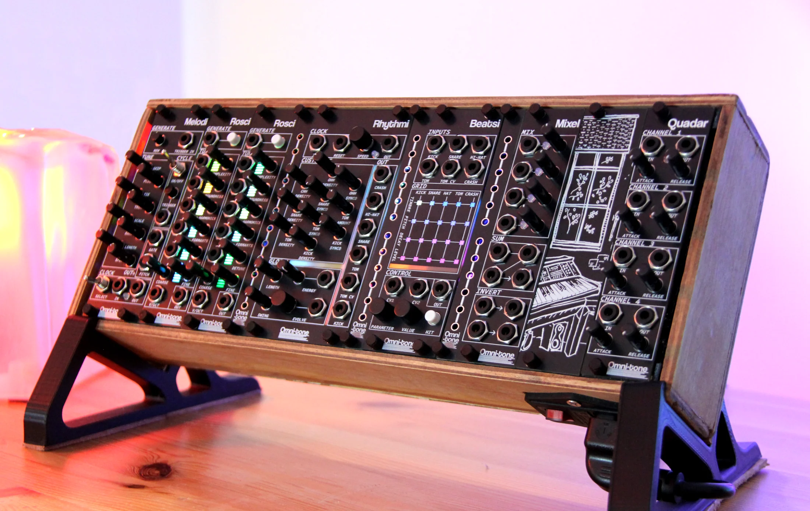

Omnitone Inc
https://omnitone.ca/Overview
I am the co-founder of Omnitone Inc, a company that designs, manufactures and sells Eurorack synthesizer modules. This means that I have direct experience with the entire product development cycle. Everything from product conceptualization, design, manufacturing and sourcing, programming, assembly, testing, QC, shipping and marketing.

Tasks
- • Product conceptualization based on market gaps
- • Electronics schematics and PCB layout
- • Development time and financial budgeting
- • Firmware development for digital modules
- • Tax compliance
- • Payroll management
- • Vendor sourcing and management
- • Assembly and QC
- • Packaging and shipping
- • Customer support and firmware updates
Learnings
Running this company (with my partner Liz) has taught me the difference between completing a home project, and designing and shipping a product from scratch that succeeds in the market. At home, small details can be overlooked, timelines can slip, and the end user is forgiving. Shipping a product to the public is vastly different, as production costs, scalability, and reliability now become priority in the design. Since Omnitone was our only source of income while starting it, and we self-funded the company, deadlines, and the consequences for missing them were very real.
I have also learned the logistical intricacies of running a hardware company. I am resposible for sourcing components, communicating with vendors and retailers about our needs, and maintaining those relationships, even through a challenging international supply chain climate. I am also resposible for the company's finances, including managing accounts and budgets for restocking, R&D, payroll, GST/HST, tax remittances and bookkeeping.
Results & Outcomes
Over 1100 units sold, 4.9/5 star ratings on retail platforms (Perfect Circuit). We are in 6 retailers worldwide.
Challenges & Solutions
One of the biggest challenge I faced while designing these modules was the integration of the RGB lighting that needed to be functional and beautiful. To get an aesthetically pleasing diffusion of light, I worked with our supplier to source a specific type of FR4 for our front panels that has as few blemishes as possible, and without a tint. In the case where distinction between the individual LED pixels was needed (for a functional purpose), a custom light shroud was designed and manufactured (3D printed) to prevent light bleed between the pixels. Special care had to be taken in the design of this light shroud to ensure reliability and manufacturability. The shroud is designed to clip onto existing through-hole components, such as audio jacks, which stay cooler than the PCB, in order to minimize plastic creep. The use of standoffs and screws was also avoided to minimize assembly time and cost. The shroud is designed to be manufacturable with a 3D printer, but can also be injection molded if needed.
The other big challenge was the firmware for our digital modules. Luckily, my partner, Liz, is a knowledgeable PCB designer, but neither of us had experience with writing firmware for a production product. I took on the challenge to learn the implementation of our musical ideas into code, primarily in C++. Since our designs use ESP32 chips, I had to learn the intricacies of the ESP-IDF framework and how to optimize code for the dual core microcontroller. Since these chips have limited peripherals, I also learned to integrate external DAC, ADC, and GPIO chips using I2C, SPI and I2S.